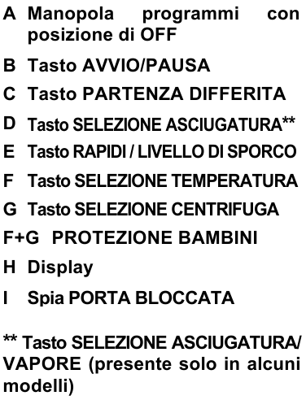

Washer-Dryer instructions
Safety
- Do not use the appliance if the surface is damaged.
- Do not place objects on the washer-dryer.
- Monitor the washing and drying process, especially with children present.
How to use the washer-dryer
- Program selection: select the desired program using the A knob.
- The washer-dryer has three distinct working methods: washing, drying, and automatic washing and drying. For a more detailed description of the programs, refer to the program paragraphs.
- Setting adjustments: if necessary, adjust the temperature and the spin on the display by pressing the F and G buttons.
- Detergent: put the detergent in the left compartment and the fabric softener, if used, in the central one. The right compartment should be filled only when using pre-wash programs, leaving the left compartment empty.
- Start: press the B power button for about 1 second.
- Stop: when the cycle is finished, turn the knob to OFF to open the door. 
Washing programs
- By selecting one of these programs using the knob, you will activate a program that provides a washing-only cycle. The drying can be selected afterwards and can be done manually, when the washing cycle is finished, by selecting a drying program using the knob, or it can be done automatically by pressing the D button on the washer-dryer display, after selecting a washing program.
- Cotton: for resistant cotton laundry.

- Eco 40-60: for normally soiled cotton laundry.

- Synthetics: for synthetic fabric laundry.
Quick wash programs
- By selecting one of these programs using the knob, you will activate a program that provides a quick wash-only cycle. The drying can be selected afterwards and can be done manually, by selecting a drying program using the knob when the washing cycle is finished, or it can be done automatically by pressing the D button on the washer-dryer display, after selecting any washing program.
- Quick 13'/30'/44': washing suitable for all types of fabric.
Recommended for small loads and lightly soiled garments.
 .
Press the E button on the washer-dryer display to change the washing duration.
.
Press the E button on the washer-dryer display to change the washing duration. - Mixed and colored 59': for mixed fabrics of different colors that are not too dirty.
- Cotton 59': for medium soiled cotton garments.
For the best results, half load is recommended.

- Special 49': ensures high washing performance at medium temperature in just 49 minutes. For the best results, half load is recommended.
Drying programs
- By selecting one of these programs using the knob, you will activate a program that provides a drying-only cycle. Use this program after a washing program to dry your clothes. Choose the program and the desired drying level, as explained below.
- Select the drying program using the knob:
- Wool: low-temperature drying, ideal for drying woolen garments.
It is recommended to turn the garments inside out before drying them.

- Mixed: low-temperature drying, recommended for mixed and synthetic fabrics.

- Wool: low-temperature drying, ideal for drying woolen garments.
It is recommended to turn the garments inside out before drying them.
- Cotton: high-temperature drying, recommended for cotton, sponge, linen, hemp fabrics.
- Extra dry: recommended for sponges, bathrobes, and bulky loads.

- Iron ready: leaves laundry ready for ironing.

- Wardrobe: for garments that do not need ironing.

- Time: 120'/90'/60'/30'.
Washing and drying programs
- To perform a washing and drying cycle automatically, select a washing or quick wash program and press the D button on the washer-dryer display to select the desired drying level.
- Washing program selection: choose the washing program using the knob.
- Drying level: select the drying level, or timed drying, by pressing the D button on the washer-dryer display, until you see the desired drying level appear on the display:
- Extra dry: recommended for sponges, bathrobes, and bulky loads.
- Iron ready: leaves laundry ready for ironing.
- Wardrobe: for garments that do not need ironing.
- Time: 120'/90'/60'/30'.
- Soil level: this option allows you to choose between three washing intensity levels, depending on the degree of soil of the fabrics, modifying the duration of the selected program (can only be used in certain programs, as indicated in the program table).
- To use this function, press the E button on the washer-dryer display, after selecting a washing program, until you see the desired drying level appear on the display.
- Child lock: press the F and G buttons simultaneously for about 3 seconds.
Special functions
Program table

If you encounter any problems, contact the host, Alessandro.